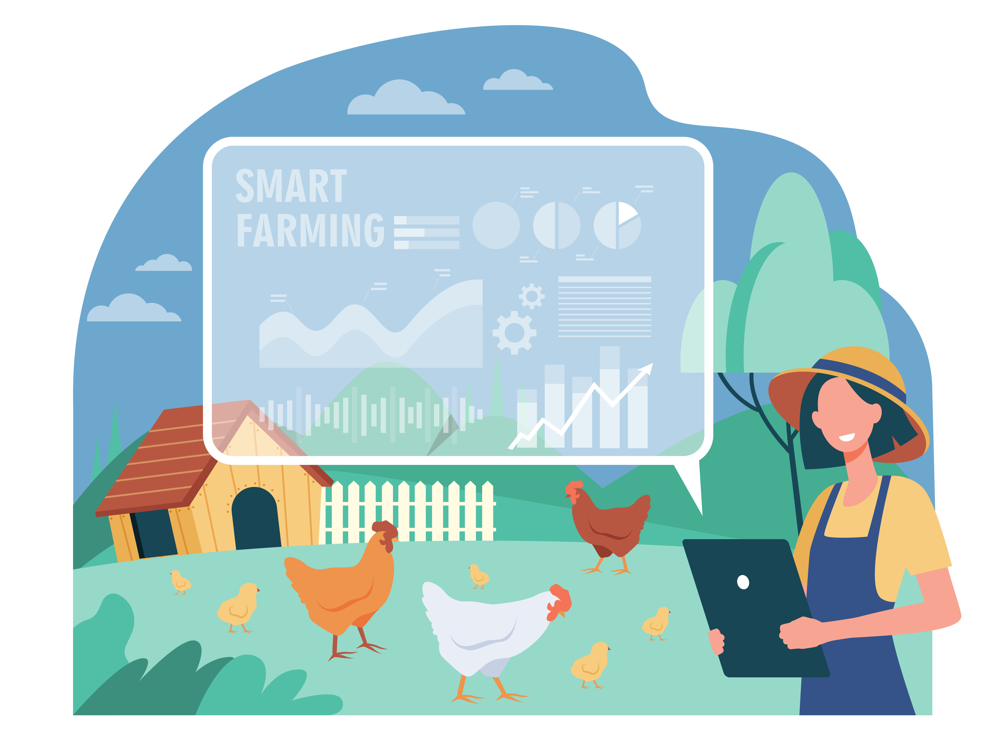

Technical Author | Developer Documentation | Docs Engineering
I turn complex technology into clear, useful documentation — while building better documentation experiences with web technologies, analytics, automation, and AI.
I'm a Technical Author with a Computer Science background and a passion for making
complex technology easier to understand. With a top 0.2% ranking at Anna University
(state level), I bring a strong academic foundation to my work at the intersection of
technical writing, documentation engineering, and web development.
I enjoy not only explaining how products work, but also improving the systems,
workflows, and experiences that help people discover and use that information.
I'm especially interested in documentation quality, analytics, automation, and
practical applications of AI in documentation workflows.
Professional experience at the intersection of technology, documentation, and user experience.
Matillion
Create and improve customer-facing and developer documentation for Maia Foundation, an agentic AI data engineering platform, while contributing to the documentation site, its UI/UX, analytics, and automation.
A blend of documentation, web, analytics, automation, and technical skills.
Academic foundation, continuous learning, and the experiences that shaped my technical journey.
CARE College of Engineering, Anna University
2019 – 2023
My undergraduate journey at CARE College of Engineering gave me a strong foundation in Computer Science while helping me develop my technical, communication, and leadership skills. Beyond academics, I actively participated in student leadership, literary activities, technical initiatives, and campus events.
A look at the kinds of documentation, web, analytics, and workflow problems I enjoy solving.
Build and improve documentation-site experiences using Markdown, HTML, CSS, JavaScript, Git, and modern documentation tooling.
Use page traffic, engagement, feedback, and event data to understand how documentation is used and identify opportunities for improvement.
Explore practical AI and automation workflows that reduce repetitive documentation work and help teams identify, triage, and improve content.
Selected examples describe the nature of my work without exposing proprietary product details.
A few personal and academic projects that show my technical foundation and curiosity.

A smart web application using XGBoost and ResNet models to recommend crops, fertilizers, and diagnose plant diseases using Python, Flask, and machine learning.
Academic excellence, leadership, and communication milestones.
Interested in documentation, docs engineering, or technical communication? Drop me a message.
jastephanierose@gmail.com